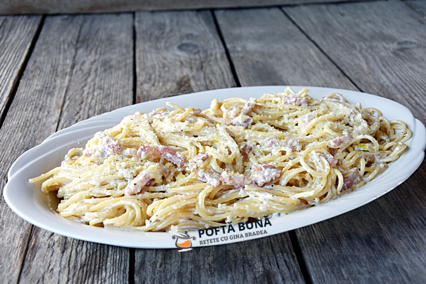

Paste cu smantana

Descriere
Paste cu sunca si sos cremos de smantana. O reteta simpla de paste pe gustul copiilor. Penne sau alte paste scurte cu sos cremos de smantana si parmezan, cu bucatele de sunca, rosii cherry si busuioc.
Reteta simpla de paste cu sunca si sos cremos de smantana se prepara si foarte repede! In 20 de minute va puteti aseza la masa.
Ingrediente
- 1 punga spaghete
- 1 cutie smantana
- 400g sunca presata
- 3 catei usturoi
- 4 linguri faina
- condimente dupa gust
- 20ml ulei
Pasi preparare
- Tai cubulete sunca si usturoiul
- Calesc sunca in ulei si usturoiul(f putin ulei; scot usturoi)
- Smantana peste sunca
- Adauga condimentele
- Pastele se fierb separat si se adauga peste sunca + smantana
- Fierbem totul